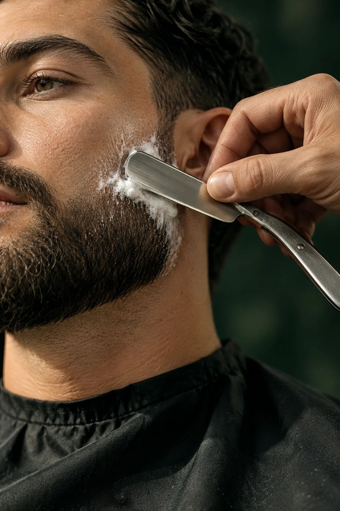
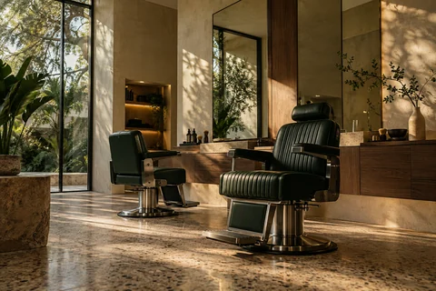

Corte autoral
Tesoura ou máquina. Desenho pensado para o seu rosto e a sua rotina.
CORTE, BARBA & IDENTIDADE
Um corte que entende quem você é.
Um cuidado que aparece nos detalhes.


Tem corte que segue uma referência.
O nosso começa com uma conversa.
Na VINCO, formato do rosto, textura do cabelo e rotina entram na mesma conta. Técnica para encontrar o seu traço. Tempo para acertar cada detalhe.
Conheça o nosso cuidadoO essencial, bem executado.
Todos os serviços começam com uma escuta
e terminam com um acabamento cuidadoso.
Tesoura ou máquina. Desenho pensado para o seu rosto e a sua rotina.
Toalha quente, contornos precisos e cuidado com a pele.
Duas técnicas, uma intenção. Cabelo e barba em equilíbrio.
Corte, barba e cuidado facial. Uma pausa feita por inteiro.
Textura, contorno, intenção.
Uma linguagem que se reconhece de perto.
Campanha visual criada com imagens geradas por IA para este projeto conceitual.
Você chega com uma ideia.
A gente dá atenção a ela.
Entendemos o que você gosta, o que funciona no seu dia e como o seu cabelo se comporta.
Contornos limpos, transições bem construídas e um acabamento que faz sentido de todos os ângulos.
Orientações simples de finalização e manutenção para o corte continuar seu, fora da cadeira.
UM TEMPO PARA VOCÊ. UM TRAÇO SÓ SEU.
Experimente o agendamento demonstrativo.
A VINCO é uma marca fictícia. Este espaço, os horários e os contatos fazem parte do conceito e não correspondem a um estabelecimento real.
Rua do Traço, 128 · Vila Clara
Aurora do Traço · Brasil
ola@vinco.example
Domínio reservado para exemplos. Não recebe mensagens.